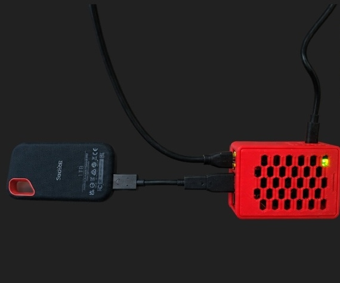
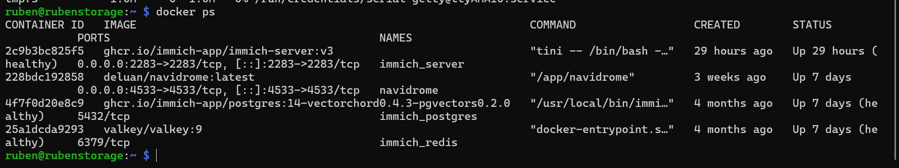
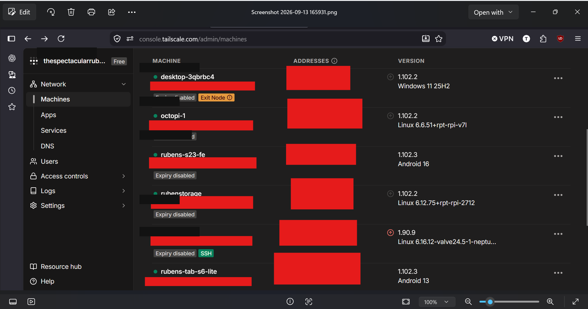
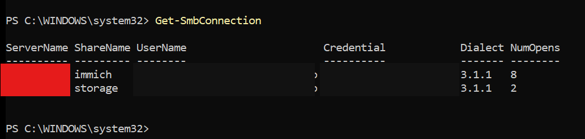
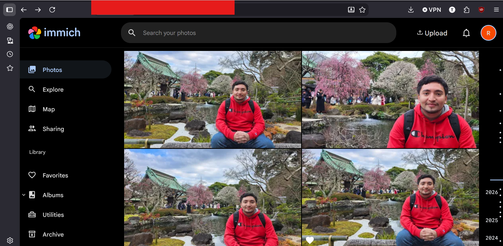
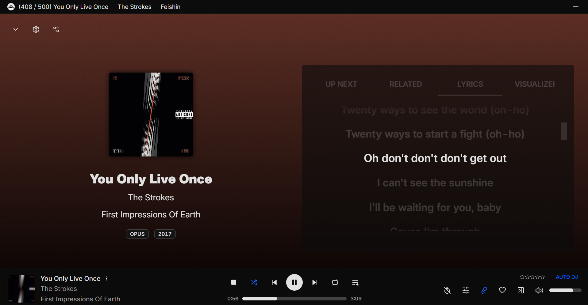

LINUX / SELF-HOSTED INFRASTRUCTURE
Raspberry Pi 5 Linux Systems Lab
Built and administer a Raspberry Pi 5-based Linux server for private networking, storage, containerized services, remote access, and self-hosted media applications.

SYSTEM OVERVIEW
Home infrastructure built as an integrated system
The system combines Linux administration, containerized services, private remote access, Windows/Linux file sharing, storage management, and self-hosted applications on a Raspberry Pi 5 with external SSD storage.
This project grew directly from skills I was developing professionally. As my work exposed me to PostgreSQL-backed systems, VPN-based remote access, server-rack infrastructure, industrial networks, and commissioning networked controls, I wanted to apply those concepts hands-on in an environment I could build, administer, troubleshoot, and expand myself.
CONTAINERS
Docker services

PRIVATE NETWORKING
Tailscale remote access

WINDOWS / LINUX INTEGRATION
SMB network storage

SELF-HOSTED APPLICATIONS
Photo and music services


SKILLS DEMONSTRATED
Systems engineering in a home lab
Linux Administration
Service management, permissions, storage, shell usage and remote troubleshooting.
Networking
Tailscale private networking and Windows/Linux interoperability over SMB.
Containers
Docker-based deployment and operation of multiple self-hosted services.
Systems Integration
Hardware, storage, networking and applications brought together into one reliable platform.